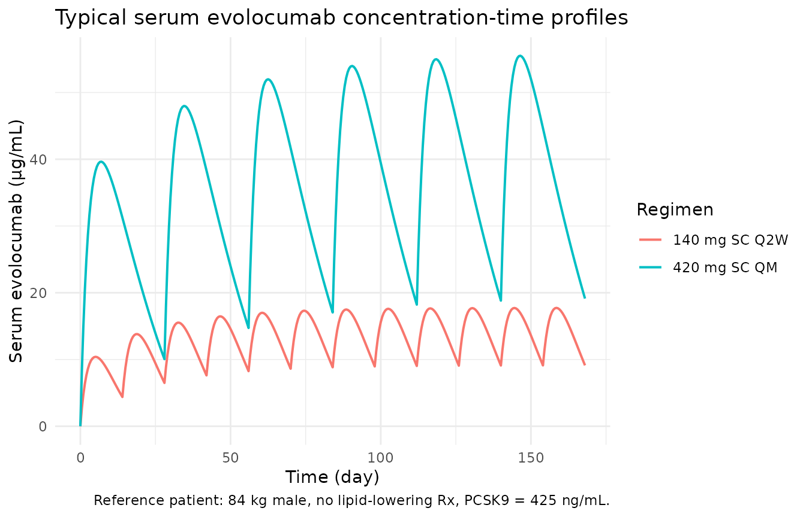
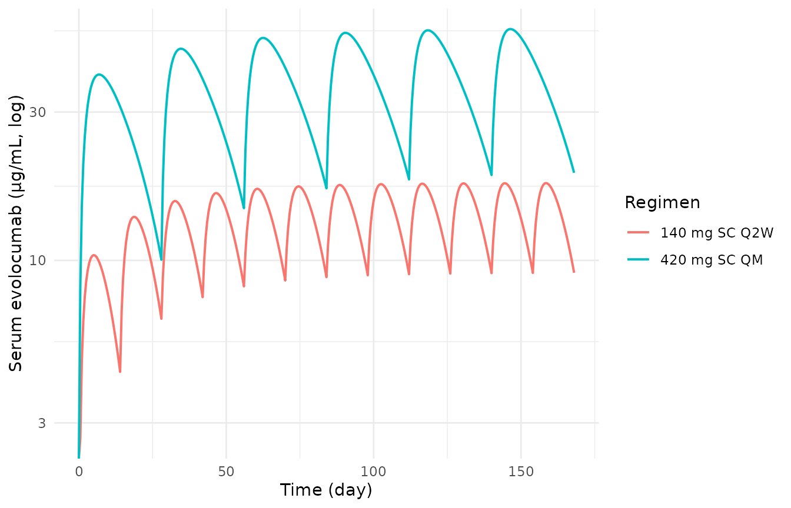

Evolocumab (Kuchimanchi 2018)
Source:vignettes/articles/Kuchimanchi_2018_evolocumab.Rmd
Kuchimanchi_2018_evolocumab.Rmd
library(nlmixr2lib)
library(rxode2)
#> rxode2 5.0.2 using 2 threads (see ?getRxThreads)
#> no cache: create with `rxCreateCache()`
library(PKNCA)
#>
#> Attaching package: 'PKNCA'
#> The following object is masked from 'package:stats':
#>
#> filter
library(dplyr)
#>
#> Attaching package: 'dplyr'
#> The following objects are masked from 'package:stats':
#>
#> filter, lag
#> The following objects are masked from 'package:base':
#>
#> intersect, setdiff, setequal, union
library(tidyr)
library(ggplot2)Evolocumab population PK replication (Kuchimanchi 2018)
Kuchimanchi et al. (2018) characterised the population pharmacokinetics of evolocumab, a fully human IgG2 monoclonal antibody against proprotein convertase subtilisin/kexin type 9 (PCSK9), in 3414 subjects pooled across 11 clinical studies spanning phase 1, 2, and 3 (healthy volunteers plus patients with hypercholesterolemia, including heterozygous familial hypercholesterolemia and conmed_statin-intolerance cohorts). The final model is a one-compartment model with first-order SC absorption from a depot compartment and parallel linear plus Michaelis–Menten (target-mediated) elimination from the central compartment. Body weight entered as a power effect on CL, V, and Vmax; female sex multiplied V; conmed_statin monotherapy, ezetimibe use (functionally the conmed_statin + ezetimibe combination-therapy indicator), and baseline PCSK9 modified Vmax. The absorption rate constant (ka), SC bioavailability (F), Michaelis–Menten constant (km), and Vmax typical value were fixed in the updated phase 3 population PK model.
This vignette reproduces typical-value concentration–time profiles for the two commercial regimens (140 mg SC Q2W and 420 mg SC QM), documents the parameter provenance in a source-trace table, and validates the simulated NCA (PKNCA) steady-state exposures against the published mean Cmax values.
Model and source
- Citation: Kuchimanchi M, Monine M, Kandadi Muralidharan K, Woodhead JL, Horner TJ. Population pharmacokinetics and exposure–response modeling and simulation for evolocumab in healthy volunteers and patients with hypercholesterolemia. J Pharmacokinet Pharmacodyn. 2019;46(2):133–148.
- Article: doi:10.1007/s10928-018-9592-y.
- No errata were identified (PubMed search
Kuchimanchi 2018 evolocumab erratum, 2026-04-24, returned no results).
Population
Kuchimanchi 2018 Table 2 (phase 1, 2, and 3 pooled column; N = 3414):
| Field | Value |
|---|---|
| N subjects | 3414 (receiving evolocumab; pooled from 5474 across all arms) |
| N observations | 16 179 evolocumab concentrations |
| N studies | 11 (1 phase 1a, 1 phase 1b, 4 phase 2, 5 phase 3) |
| Age | 18–80 years (mean 57) |
| Weight | 41–175 kg (mean 84.2) |
| Sex | 50% female / 50% male |
| Race / ethnicity | 87% White, 7% Black, 4% Asian, 2% other |
| Disease state | Healthy volunteers (phase 1a) + hypercholesterolemia patients |
| Baseline PCSK9 | Mean 402 ng/mL (range 15.5–1233) |
| Baseline albumin | Mean 4.3 g/dL (range 2.6–5.6) |
| HeFH (%) | 9% |
| Diabetes (%) | 11% |
| Statin (any) (%) | ~72% |
| Ezetimibe (%) | 12% |
| Dose range | 7–420 mg IV or SC across single- and multiple-dose regimens |
| Phase 3 regimens | 140 mg SC Q2W and 420 mg SC QM |
| Reference patient | 84 kg male, no lipid-lowering meds, baseline PCSK9 = 425 ng/mL |
The population metadata is also available programmatically via
readModelDb("Kuchimanchi_2018_evolocumab")$population.
Source trace
Every numeric value in the model file
inst/modeldb/specificDrugs/Kuchimanchi_2018_evolocumab.R is
sourced from Kuchimanchi 2018. Final estimates are the updated
phase 3 population PK model column in Table 3; Vmax
and km were fixed in that column from the phase 1+2 run
because phase 3 used only two dose regimens.
| Quantity | Source location | Value used |
|---|---|---|
| Structural model (1-cmt, linear + MM) | Methods § PopPK analysis / Figure 1a | Depot → central, CL + V·Vmax·C/(km+C) |
| F (SC bioavailability) | Table 3 | 0.72 (FIXED) |
| ka | Table 3 | 0.319 day-1 (FIXED) |
| CL | Table 3 | 0.105 L/day |
| V | Table 3 | 5.18 L |
| Vmax | Table 3 | 9.85 nM/day (FIXED) |
| km | Table 3 | 27.3 nM (FIXED) |
| Reference body weight | Methods, reference-patient definition | 84 kg (male) |
| WT exponent on CL | Table 3 | 0.276 |
| WT exponent on V | Table 3 | 1.04 |
| Female exponent on V | Table 3 | 1.11 |
| WT exponent on Vmax | Table 3 | 0.145 |
| Statin (monotherapy) exponent on Vmax | Table 3 | 1.13 |
| Statin + ezetimibe exponent on Vmax | Table 3 | 1.20 |
| Baseline PCSK9 exponent on Vmax | Table 3 | 0.194 |
| Reference PCSK9 | Methods, reference-patient definition | 425 ng/mL (= 5.9 nM) |
| IIV on CL | Table 3 | 54.3% CV |
| IIV on V | Table 3 | 28.3% CV |
| IIV on Vmax | Table 3 | 31.1% CV |
| IIV on ka | Table 3 | 74.6% CV (FIXED) |
| IIV on km | Table 3 | 0% (FIXED) |
| Full-block CL/V/Vmax omega structure | Table 3 note; Table 4 referenced but | Correlations not published — diagonal used |
| actually E-R parameters | (see Assumptions and deviations) | |
| Proportional residual error | Table 3 | 0.282 (28.2% CV) |
| Additive residual error | Table 3 | 5.41 nM (= 0.767 µg/mL at MW 141.8 kDa) |
| Evolocumab molecular weight | FDA-approved Repatha label | 141 800 g/mol |
PCSK9 MW (~72 kDa), used only to cross-check the paper’s nM↔︎ng/mL conversion (5.9 nM ≈ 425 ng/mL), is not a model parameter.
Virtual cohort
The original patient-level data are not public. To replicate the
paper’s reference-patient Cmax we simulate a small
typical-value cohort at the two commercial regimens (140 mg SC Q2W and
420 mg SC QM) with the model’s random effects zeroed
(rxode2::zeroRe()), i.e. a single “average” subject per
regimen matching the Methods-section reference definition (84 kg male,
no lipid-lowering medication, baseline PCSK9 = 425 ng/mL).
set.seed(20260424)
reference_covariates <- tibble::tibble(
WT = 84,
SEXF = 0L,
CONMED_STATIN_MONO = 0L,
CONMED_EZE = 0L,
PCSK9 = 425
)
make_regimen <- function(amt, ii, addl, label) {
ev <- rxode2::et(amt = amt, cmt = "depot", ii = ii, addl = addl) |>
rxode2::et(seq(0, 12 * 14, by = 0.5))
df <- as.data.frame(ev)
df$id <- 1L
df$WT <- reference_covariates$WT
df$SEXF <- reference_covariates$SEXF
df$CONMED_STATIN_MONO <- reference_covariates$CONMED_STATIN_MONO
df$CONMED_EZE <- reference_covariates$CONMED_EZE
df$PCSK9 <- reference_covariates$PCSK9
df$regimen <- label
df
}
events <- dplyr::bind_rows(
make_regimen(amt = 140, ii = 14, addl = 11, label = "140 mg SC Q2W"),
make_regimen(amt = 420, ii = 28, addl = 5, label = "420 mg SC QM") |>
dplyr::mutate(id = 2L)
)
stopifnot(!anyDuplicated(unique(events[, c("id", "time", "evid")])))Simulation
mod <- readModelDb("Kuchimanchi_2018_evolocumab")
ui <- rxode2::rxode(mod)
#> ℹ parameter labels from comments will be replaced by 'label()'
# Typical-value prediction: no between-subject variability and no residual error.
mod_typical <- rxode2::zeroRe(ui)
sim <- rxode2::rxSolve(mod_typical, events = events, keep = c("regimen"))
#> ℹ omega/sigma items treated as zero: 'etalcl', 'etalvc', 'etalvmax', 'etalka'
#> Warning: multi-subject simulation without without 'omega'Replicate published figures
ggplot(sim, aes(time, Cc, colour = regimen)) +
geom_line(linewidth = 0.7) +
labs(x = "Time (day)", y = "Serum evolocumab (µg/mL)",
colour = "Regimen",
title = "Typical serum evolocumab concentration-time profiles",
caption = "Reference patient: 84 kg male, no lipid-lowering Rx, PCSK9 = 425 ng/mL.") +
theme_minimal(base_size = 11)
Typical serum evolocumab concentration time-course after 140 mg SC Q2W and 420 mg SC QM (reference patient). Replicates the shape and range of Figure 4a/4c of Kuchimanchi 2018.
ggplot(sim, aes(time, Cc, colour = regimen)) +
geom_line(linewidth = 0.7) +
scale_y_log10() +
labs(x = "Time (day)", y = "Serum evolocumab (µg/mL, log)",
colour = "Regimen") +
theme_minimal(base_size = 11)
#> Warning in scale_y_log10(): log-10 transformation introduced
#> infinite values.
Same simulation on a log scale, showing the dose-proportional scaling between Q2W and QM trough concentrations.
PKNCA validation
Use PKNCA to compute steady-state AUC, Cmax, Tmax, Cmin, and Cavg over the last dosing interval of each regimen (days 154–168 for Q2W, days 140–168 for QM). We keep observations between the final dose and the end of simulation, one per regimen, so NCA runs on the steady-state window.
tau_by_regimen <- c("140 mg SC Q2W" = 14, "420 mg SC QM" = 28)
sim_nca <- sim |>
dplyr::filter(!is.na(Cc)) |>
dplyr::mutate(
tau = tau_by_regimen[regimen],
dose_last = 12 * 14 - tau
) |>
dplyr::filter(time >= dose_last) |>
dplyr::mutate(tad = time - dose_last) |>
dplyr::select(id, time, tad, Cc, regimen)
dose_df <- events |>
dplyr::filter(evid == 1) |>
dplyr::group_by(id, regimen) |>
dplyr::slice_tail(n = 1) |> # final dose only
dplyr::ungroup() |>
dplyr::select(id, time, amt, regimen)
conc_obj <- PKNCA::PKNCAconc(
sim_nca, Cc ~ time | regimen + id,
concu = "ug/mL", timeu = "day"
)
dose_obj <- PKNCA::PKNCAdose(
dose_df, amt ~ time | regimen + id,
doseu = "mg"
)
intervals <- data.frame(
start = c(12 * 14 - 14, 12 * 14 - 28),
end = c(12 * 14, 12 * 14),
cmax = TRUE,
tmax = TRUE,
cmin = TRUE,
auclast = TRUE,
cav = TRUE
)
nca_res <- PKNCA::pk.nca(
PKNCA::PKNCAdata(conc_obj, dose_obj, intervals = intervals)
)
#> Warning: Requesting an AUC range starting (0) before the first measurement (14)
#> is not allowed
nca_tbl <- as.data.frame(nca_res$result) |>
dplyr::select(regimen, PPTESTCD, PPORRES) |>
tidyr::pivot_wider(names_from = PPTESTCD, values_from = PPORRES)
#> Warning: Values from `PPORRES` are not uniquely identified; output will contain
#> list-cols.
#> • Use `values_fn = list` to suppress this warning.
#> • Use `values_fn = {summary_fun}` to summarise duplicates.
#> • Use the following dplyr code to identify duplicates.
#> {data} |>
#> dplyr::summarise(n = dplyr::n(), .by = c(regimen, PPTESTCD)) |>
#> dplyr::filter(n > 1L)
knitr::kable(nca_tbl,
caption = "Steady-state NCA parameters from the simulated reference patient.")| regimen | auclast | cmax | cmin | tmax | cav |
|---|---|---|---|---|---|
| 140 mg SC Q2W | 202.8204, NA | 17.73123, 17.73123 | 9.112862, 9.112862 | 4.5, 18.5 | 14.48717, NA |
| 420 mg SC QM | 438.6985, 1119.6855 | 44.65999, 55.49947 | 19.12768, 18.82097 | 0.0, 6.5 | 31.33561, 39.98877 |
Comparison against published Cmax
Kuchimanchi 2018 Results, paragraph following Table 3, reports mean observed unbound evolocumab Cmax of 18.6 µg/mL after 140 mg SC Q2W and 59 µg/mL after 420 mg SC QM. These values are population means observed across the phase 1–3 dataset (i.e., they include between-subject variability and covariate effects that differ from the Methods-defined reference patient), so an exact match is not expected for the typical-value simulation here; agreement within ~10% would be a reasonable sanity check. The Tmax of the SC profile is not reported as a typical value in the paper; the simulated Tmax is driven by the fixed ka = 0.319 day-1 and the regimen-specific dose accumulation.
cmax_obs <- tibble::tibble(
regimen = c("140 mg SC Q2W", "420 mg SC QM"),
cmax_paper_ugmL = c(18.6, 59)
)
cmax_sim <- sim |>
dplyr::filter(time >= 12 * 14 - 28) |> # within last QM interval window
dplyr::group_by(regimen) |>
dplyr::filter(time >= (12 * 14 - tau_by_regimen[regimen[1]])) |>
dplyr::summarise(cmax_sim_ugmL = max(Cc), .groups = "drop")
cmax_cmp <- dplyr::left_join(cmax_obs, cmax_sim, by = "regimen") |>
dplyr::mutate(pct_diff = round(100 * (cmax_sim_ugmL - cmax_paper_ugmL)
/ cmax_paper_ugmL, 1))
knitr::kable(cmax_cmp,
caption = "Simulated (typical-value) steady-state C~max~ vs published mean observed C~max~.")| regimen | cmax_paper_ugmL | cmax_sim_ugmL | pct_diff |
|---|---|---|---|
| 140 mg SC Q2W | 18.6 | 17.73123 | -4.7 |
| 420 mg SC QM | 59.0 | 55.49947 | -5.9 |
Assumptions and deviations
-
IIV block matrix approximated as diagonal.
Kuchimanchi 2018 states that CL, V, and Vmax share a
full-block variance matrix and refers the reader to “Table 4” for the
inter-parameter correlations. However, the paper’s Table 4 is the
exposure–response model parameter table and does not list the
population-PK omega-block correlations; the correlations are not
published anywhere in the article or supplement. The model file
therefore encodes independent diagonal IIV on CL, V, and
Vmax. This understates the individual-level covariance
structure relative to the published fit (in particular the high
CL–Vmax correlation that the paper calls out as influencing
body-weight covariate-effect precision) but has no effect on
typical-value (
rxode2::zeroRe()) simulation or on population-level summaries. - Exposure–response (Emax) model not packaged. The paper additionally reports an Emax-type exposure–response model (Table 4) linking AUCwk8–12 to LDL-C at the mean of weeks 10 and 12. That model is a cross-sectional algebraic relationship rather than a dynamic PK/PD ODE, so it is not a natural fit for the nlmixr2lib library. Only the population PK model is packaged here.
- Molecular weight used to convert between the paper’s target-unit scale (nM) and the model’s concentration scale (µg/mL) is 141 800 g/mol (evolocumab, FDA-approved Repatha label). The paper does not state the molecular weight explicitly; the same value reproduces the paper’s 5.9 nM ≈ 425 ng/mL reference-PCSK9 relationship within rounding when the PCSK9 molecular weight (~72 kDa) is applied to PCSK9.
- Reference patient characteristics used in the virtual cohort are the Methods-section reference definition: 84 kg male, not on lipid-lowering medication, baseline PCSK9 = 425 ng/mL. Body weight distribution and PCSK9 distribution in the broader trial population (which shifts observed mean Cmax slightly relative to the reference patient) are not reproduced in this typical-value simulation.
-
Time-fixed covariates. All covariates in the model
file (
WT,SEXF,CONMED_STATIN_MONO,CONMED_EZE,PCSK9) are treated as baseline time-fixed. Kuchimanchi 2018’s dataset used baseline values for these covariates; concomitant-medication status was required to be stable (>4 weeks of administration before study day 1) in the exposure–response analysis, though the popPK analysis used any duration of administration.